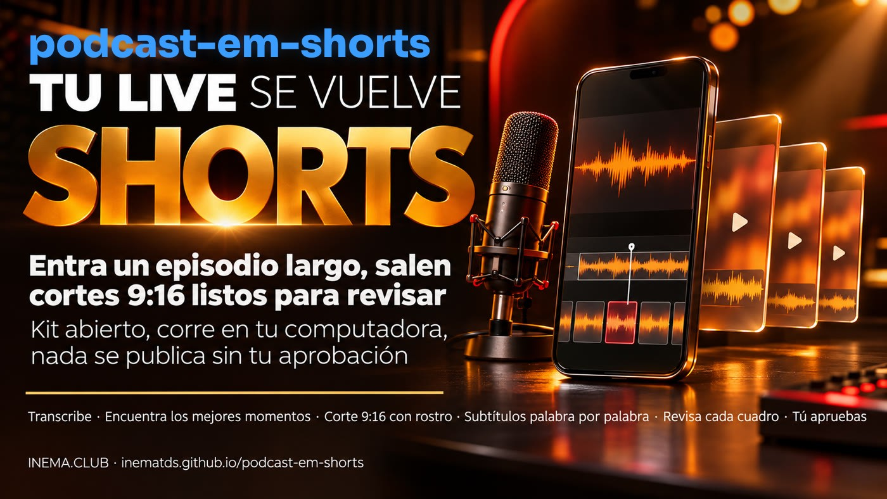
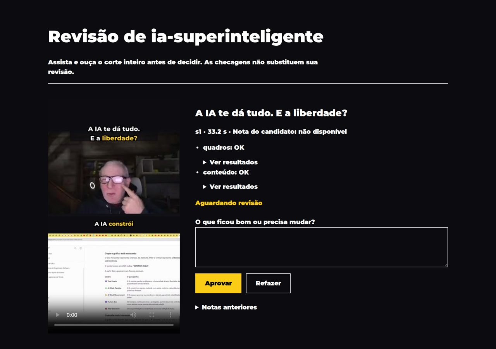
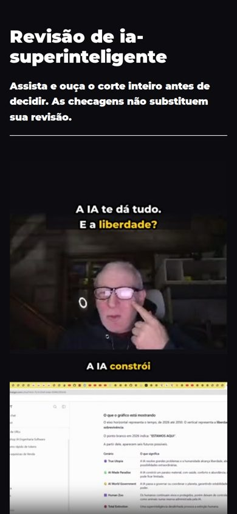

Entra un episodio largo. Salen cortes 9:16 con rostro, pantalla y subtítulos palabra por palabra, ya revisados cuadro por cuadro. Nada se publica sin tu aprobación.

podcast-em-shorts es un kit gratuito en Python que transforma una grabación larga (podcast, live, entrevista o clase) en videos cortos verticales. Lee la transcripción, señala los fragmentos que se entienden por sí solos, corta en formato 9:16 con el rostro ampliado y la pantalla abajo, agrega subtítulos palabra por palabra y revisa cada cuadro. Sirve para quienes graban mucho y no tienen tiempo para editar. Necesitas una computadora con Python y ffmpeg; no hace falta ninguna cuenta, clave ni servicio pago.
Elegir el fragmento, armar el video vertical y comprobar que nada haya quedado mal. El kit hace las tres cosas y te deja la decisión final.
Lee lo que se dice y califica cada fragmento de 20 a 59 s: número, "tú", giro, pregunta, conclusión. Avisa cuando empieza a mitad de una frase, depende de la pantalla o incluye "suscríbete".
Encuentra la cámara web automáticamente. Arriba, el rostro ampliado sin cortar la cabeza; abajo, la pantalla sigue los cambios. Título arriba y subtítulos amarillos palabra por palabra.
Revisa cada cuadro (subtítulos sobre el rostro, cabeza cortada, pantalla negra, imagen congelada, sonido) y el texto (frase completa). Una página local te muestra todo para aprobar o pedir que lo rehagan.
Cada etapa guarda un archivo en la carpeta del episodio, así que puedes parar, revisar y continuar. El atajo tudo ejecuta la secuencia completa.
tela+camera (live con cámara web en una esquina): rostro arriba, pantalla abajo. camera (podcast con cámara): sigue el rostro. tela (sin rostro): pantalla al centro. El kit elige automáticamente.
Los colores, la fuente, el tamaño de los subtítulos, la duración mínima y máxima y la cantidad de shorts por episodio están en marca/marca.json. Cámbialos ahí y todo se actualiza.
¿Pediste rehacerlo? Convierte tu comentario en una regla personal (desde R200) con un comando para que el mismo error no vuelva a ocurrir.
Funciona en Linux y Mac, sin tarjeta gráfica. La transcripción local (faster-whisper) es opcional: también puedes traer la transcripción lista en JSON.
Python 3.10 o posterior y ffmpeg. Comprueba la versión con python3 --version.
sudo apt install python3-venv ffmpeg git python3 --version
Con Homebrew instalado. En Mac el comando siempre es python3.
brew install python ffmpeg gitDescárgalo e instala las bibliotecas en un entorno propio (la carpeta .venv, que guarda las bibliotecas del kit sin modificar el resto de la computadora).
git clone https://github.com/inematds/podcast-em-shorts cd podcast-em-shorts python3 -m venv .venv .venv/bin/pip install -r requirements.txt faster-whisper
Los comandos de abajo usan .venv/bin/python (el entorno creado en los requisitos previos). Cambia minha-live por el nombre de tu episodio (letras minúsculas, números y guion). Entra siempre a la carpeta antes: cd podcast-em-shorts. "9:16" es el video vertical del celular (1080×1920).
Muestra ok o falta para cada componente. La primera vez descarga el detector de rostros (YuNet, un modelo abierto de ~230 KB de OpenCV) y comprueba su integridad.
.venv/bin/python pes.py doutor
Copia el video en episodios/minha-live/raw/. El original nunca se elimina.
.venv/bin/python pes.py novo minha-live --video /caminho/da/live.mp4
Con faster-whisper instalado, funciona en tu computadora. La primera vez descarga el modelo de transcripción (el small tiene algunos cientos de MB; tiny es más rápido, medium acierta más): sin cuenta ni API. ¿Ya tienes la transcripción con tiempos por palabra (el archivo JSON que genera Whisper)? Impórtala con --de-json.
.venv/bin/python pes.py transcrever minha-live --modelo small --idioma pt # o, con la transcripción lista: .venv/bin/python pes.py transcrever minha-live --de-json transcricao.json
Antes de recortar, reemplaza las palabras incorrectas para que los subtítulos queden bien. El reemplazo es exacto (distingue mayúsculas y minúsculas) y puedes repetir --trocar tantas veces como necesites.
.venv/bin/python pes.py corrigir minha-live --trocar "Iá=IA"
Enumera los fragmentos con puntuación, señales y alertas. Elige por código (c01, c03…) y asigna un título breve a cada uno. ¿Encontraste un fragmento mejor? El comando palavras muestra la transcripción con los números de las palabras (búscalas con --busca); usa esos números en manual.
.venv/bin/python pes.py candidatos minha-live --top 12 .venv/bin/python pes.py escolher minha-live c01,c03 --titulo "s1=O pedido que a IA acerta" --titulo "s2=Seja o maestro dos agentes" # fragmento elegido manualmente: encuentra los números y elige .venv/bin/python pes.py palavras minha-live --busca "paraíso" .venv/bin/python pes.py escolher minha-live manual --ajustar s1=1239:1315 --titulo "s1=A IA te dá tudo. E a liberdade?"
layout detecta dónde están la cámara web y la pantalla; render genera clips/s1.mp4, s2.mp4… en 1080×1920.
.venv/bin/python pes.py layout minha-live .venv/bin/python pes.py render minha-live --todos
Cada una termina con QUADROS OK / CONTEUDO OK o FALHOU: motivo. Los motivos más comunes: rosto_legenda (los subtítulos tocaron el rostro), cabeca_cortada, inicio_meio o sem_muleta (el fragmento empieza a mitad de una frase o con "entonces/¿no?"). ¿Falló? Elige otro fragmento o ajusta el inicio y el final; no ocultes el error. Las reglas completas están en regras/REGRAS.md.
.venv/bin/python pes.py checar-quadros episodios/minha-live/clips/s1.mp4 --legendas episodios/minha-live/clips/s1.legendas.json .venv/bin/python pes.py checar-conteudo minha-live s1
Abre una página en tu computadora con cada short, las comprobaciones, un campo para comentarios y los botones Aprovar (aprobar) y Refazer (rehacer). La decisión queda guardada en revisao.json.
.venv/bin/python pes.py revisao minha-live # abre la dirección que aparece (http://127.0.0.1:…) # para abrirla en el celular, conectado a la misma red Wi-Fi: .venv/bin/python pes.py revisao minha-live --host 0.0.0.0 # en el celular: http://IP-deste-computador:porta
Copia solo los aprobados en aprovados/, junto con un texto de apoyo (título y lo que se dice) para que publiques donde quieras. El kit no publica nada.
.venv/bin/python pes.py exportar minha-live
El último comentario sobre el short se convierte en una regla personal en regras/MINHAS-REGRAS.md. Las reglas del kit van de R1 a R32; las tuyas empiezan en R200.
.venv/bin/python pes.py regra --da-nota minha-live s1 .venv/bin/python pes.py regra "Título com no máximo 5 palavras" --quem conteudo
Después del paso 2 (novo), un solo comando transcribe (o importa), elige los mejores fragmentos sin alertas, recorta, revisa y muestra el comando para abrir la página de revisión. Nunca aprueba automáticamente, y el título automático es el comienzo de lo que se dice: cámbialo por un título propio con escolher antes de publicar.
.venv/bin/python pes.py tudo minha-live --modelo small --idioma pt # o con la transcripción lista: .venv/bin/python pes.py tudo minha-live --de-json transcricao.json
El kit incluye una skill (un archivo de instrucciones que lee el agente) con el orden de los pasos y cuándo detenerse. Copia la carpeta a las skills de tu agente y pídele "haz los shorts de mi live". Si no usas un agente, sigue los pasos anteriores manualmente.
mkdir -p ~/.claude/skills && cp -r skill/podcast-em-shorts ~/.claude/skills/ # Codex: lee skill/podcast-em-shorts/SKILL.md al iniciar la conversación
Live "IA Superinteligente", con pantalla compartida y cámara web en una esquina. Transcripción de 6.443 palabras. Los tres pasan las comprobaciones de cuadros y contenido. Con la transcripción lista, el atajo tudo tardó 1 min 20 s desde el video hasta los tres shorts revisados, con la computadora desocupada.


--host 0.0.0.0, en la misma red Wi-Fi).Al crear estos ejemplos, las comprobaciones rechazaron un fragmento que empezaba con "Entonces," y un caso en que interpretó la mano que apuntaba al rostro como un segundo rostro. Cambiamos el primer fragmento; el segundo llevó a corregir el detector, con una prueba.
Al revisar cuadro por cuadro, encontramos una segunda cabeza cortada en la parte superior cuando la cabeza tocaba el borde de la cámara web. Se convirtió en una regla: el recorte nunca sale de la ventana de la cámara web. Por eso la revisión humana sigue siendo obligatoria.
La versión actual cubre el proceso completo de un episodio con una persona.